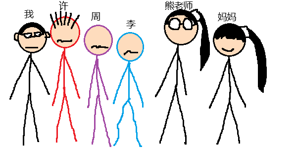

第106篇 日记
2025年09月19日 阴 Fri.
日常生活：幸后生悲
（这里为大家解答上一篇日记中提到的问题）那么杨老师到底去哪里了？胡欣妍问了杨老师的女儿梅梓扬，梅梓扬说杨老师因为走路的时候不小心摔跤了，便请了4天假。
大课间，熊老师叫我和许梓浩、李钧宸、周宏宇去她办公室一趟。我们以为我们“犯罪”了，上去肯定要被一顿骂，所以我们都很紧张，走路走不稳。
其实，只是我的妈妈要认识许、周、李而已（我的妈妈也是学校的一位老师）。熊老师说：“许梓浩的成绩还可以，不过李钧宸这个学期不知怎么回事，倒退了。所以李钧宸要努力了，还有周宏宇……”最后，妈妈居然给许、周、李一人两块糖。然后我们回班，周宏宇说：“我还以为是要缴剧本（在我们班上，同学自己画的漫画都叫作‘剧本’，但是老师不希望我们画剧本，于是便会看到一本剧本就没收）。”
但是，下午休的课间发生了“意外”，许梓浩和李钧宸在看许梓浩的漫画时，熊老师一进门就看到了许梓浩的漫画，于是她就批评了许梓浩和李钧宸，然后把漫画没收了。虽然熊老师说学期末会还给许梓浩，但许梓浩还是很难过。而文雨涵[1]却在旁边笑。
注释：